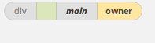
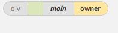

import lumieres
reload(lumieres)
lumieres.focusLumieres();
lumieresRegion = lumieres.makeNewApplication("focus")
click(Pattern().targetOffset(62,2))
browserLaunched = False
maxAttemptCount = 10
attemptCount = 0
while not browserLaunched or attemptCount > maxAttemptCount:
sleep(1)
attemptCount = attemptCount + 1
browserRegion = App.focusedWindow()
browserLaunched = (
lumieresRegion.w != browserRegion.w or
lumieresRegion.h != browserRegion.h or
lumieresRegion.x != browserRegion.x or
lumieresRegion.y != browserRegion.y)
type(Key.TAB, Key.META)
dragDrop( , )
lumieres.save()
wait(browserRegion.find(
, )
lumieres.save()
wait(browserRegion.find( ))
))